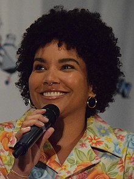

Vanya/Victor Hargreeves
Viktor Hargreeves (Número Siete). Fue uno de los siete niños adoptados por Sir Reginald con la intención de entrenarlos para salvar el mundo. A diferencia de sus seis hermanos adoptivos, aparentemente Viktor no tiene superpoderes. Tenía talento para el violín, y cuando fue adulto escribió una autobiografía sobre su vida como miembro ordinario de la Academia Umbrella.
Elliot Page
Elliot Page nació en Halifax, Canadá el 21 de febrero de 1987, anteriormente conocido como Ellen Page, es un actor, productor y activista canadiense. Comenzó su carrera interpretando roles femeninos, primeramente en programas de televisión. Su despegue se dio con su caracterización del personaje principal en la película Juno (2007), lo que le valió nominaciones para el Premio de la Academia, el BAFTA y el Premio del Sindicato de Actores a mejor actriz y el Globo de Oro a mejor actriz de musical o comedia. Además, ganó el Premio Independent Spirit, un MTV Movie Award y un Teen Choice Award.
Cinco Hargreeves

Número Cinco nació en la duodecima hora del primer día de octubre de 1989, de una madre sin ningún síntoma previo de embarazo. Fue adoptado por el excéntrico millonario Sir Reginald Hargreeves quien lo nombró Número Cinco. Cinco fue uno de los cuarenta y tres hijos niños que nacieron el mismo día en 1989.
Cinco fue uno de los siete adoptados por Sir Reginald con la intención de entrenarlos para salvar el mundo.El tiene la capacidad de viajar en el espacio y el tiempo, siendo esta habilidad lo que lo terminó atrapando en el futuro como un niño.
Aidan Gallagher
Aidan Gallagher nació en Los Ángeles el 18 de septiembre del año 2003. Es un actor y cantante estadounidense.
Con nueve años comenzó a actuar y en el año 2014, Aidan consiguió su primer papel protagónico en la exitosa serie de Nickelodeon Nicky, Ricky, Dicky & Dawn, interpretando a Nicholas "Nicky" Harper. Estuvo en el programa durante cuatro temporadas hasta que terminó en 2018.En el 2019 obtuvo el papel co-protagónico en la adaptación del cómic The Umbrella Academy, en la serie de Netflix, que fue estrenada el 15 de febrero de 2019, interpretando al personaje Número Cinco.
Klaus Hargreeves
Klaus tenía la capacidad de comunicarse con los espíritus y con los que están en la otra vida. Debido a sus propios miedos, Klaus usa alcohol y drogas para automedicarse y mantener sus poderes amortiguados. Cuando se encuentra en un estado de sobriedad, Klaus usa la capacidad de hablar con su hermano fallecido, Ben, que parece ser el único espíritu al que no teme. Cuando habló con Sir Reginald en la otra vida, a Klaus le dijeron que apenas había arañado la superficie de su potencial.
Robert Michael Sheehan
Robert Michael Sheehan nacio en Portlaoise, Condado de Laois el 7 de enero de 1988. Es un actor irlandés conocido por papeles televisivos como Nathan Young en Misfits, Darren Treacy en Love/Hate o Klaus Hargreeves en The Umbrella Academy, así como papeles cinematográficos como Tom Natsworthy en Mortal Engines y Simon Lewis en Cazadores de Sombras: Ciudad de Hueso.
El 11 de mayo de 2016 se anunció que se había unido al elenco de la película The Mortal Engines. Mas tarde en 2019 participa en la serie original de Netflix The Umbrella Academy en el papel de Klaus Hargreeves.
Ben Hargreeves
Ben Hargreeves también conocido como número 6. Fue miembro de la academia umbrella. Siendo aun joven murio en una mision. Su hermano Klaus es el unico que lo puede ver desde que murio.
Ben posee la habilidad de invocar a criaturas eldritch a través de un portal a otra dimensión ubicada en su cuerpo. Su muerte fue una de las principales razones por las que la Academia se disolvió.
Justin H. Min
Justin Hong-Kee Min nacio el 20 de marzo de 1990, es un actor estadounidense. Comenzó su carrera como actor con papeles en varias producciones de Wong Fu . Interpreta a Ben Hargreeves en la serie original de Netflix The Umbrella Academy (2019-presente). También es conocido por interpretar el papel principal en After Yang (2021).
Allison Hargreeves
Originalmente designada como Número Tres segun su clasificacion por su utilidad individual. Tiene la capacidad de influir en los eventos antecediendo cualquier declaración con "Escuché un rumor".
Después de que Five no pudo evitar la mitad del apocalipsis causado por Viktor, se encontró en Dallas, 1961 durante el apogeo del Movimiento por los Derechos Civiles de los Estados Unidos. Separada de sus hermanos y lidiando con la pérdida de su voz, Allison navegó por una sociedad sureña segregada y racista.
Emmy Raver-Lampman
Nacio en Virginia el 5 de septiembre de 1988 es una actriz de cine, teatro y televisión y cantante. En la universidad, asistió al Marymount Manhattan College, donde en 2012 se graduó con una licenciatura en teatro. Comenzó su carrera de actriz en el teatro musical, luego de audicionar para Los Niños del Edén mientras estudiaba. También ha actuado en Broadway, en Jekyll & Hyde, A Night with Janis Joplin y The Spongebob Musical.Por otra parte, ha participado en series de televisión como A Million Little Things y The Umbrella Academy, de Netflix, siendo en esta última donde tuvo su primer papel protagónico.
Diego Hargreeves
Diego Hargreeves también conocido como número 2 es uno de los siete hijos adoptivos de Sir Reginald.
Diego tiene el poder de controlar la dirección de todo lo que lanza. Este poder se muestra cada vez que Diego lanza uno de sus cuchillos pues puede dar giros muy bruscos sin tocarlos.
David Castañeda
David Castañeda nacio en Los Ángeles, Estados Unidos, el 24 de octubre de 1989 es un actor que fue criado en la ciudad de El Fuerte, Sinaloa, México. Regresó a Estados Unidos con 14 años para cursar la secundaria. Estudio producción cinematográfica en la Universidad Estatal de California. Posteriormente, comenzó a estudiar actuación mientras hacía audiciones, logrando graduarse en 2015. En 2017 fue elegido para interpretar a Diego Hargreeves en la serie de Netflix The Umbrella Academy, el cual ha sido el papel más importante de su carrera.
Luther Hargreeves
Luther tiene el poder de la fuerza bruta, este poder se muestra cuando Cha-Cha le tira una lámpara encima y se levanta sin problemas.
Luther fue el último en dejar la academia. En una de las misiones a las que le mandó su padre cuando ya solo quedaba él, Luther sufrió un accidente y su padre, para salvarle la vida, unió su cabeza al cuerpo de un gorila por lo que Luther siempre lleva abrigo y guantes para que nadie le vea.
Tom Hopper

Thomas Edward "Tom" Hopper nacio en Coalville, Leicestershire el 28 de enero de 1985. Es un actor inglés, conocido por interpretar a Sir Percival en la serie de la BBC Merlín, a Dickon Tarly en Juego de tronos, al pirata Billy Bones en Black Sails y a Luther en la serie de Netflix The Umbrella Academy.